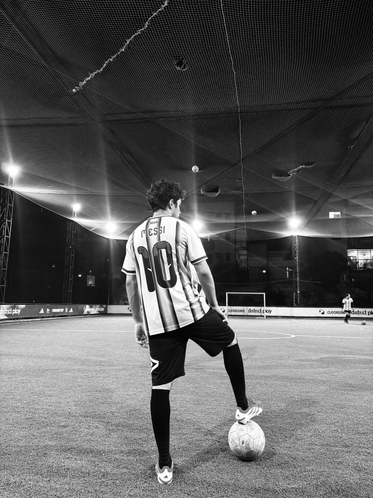
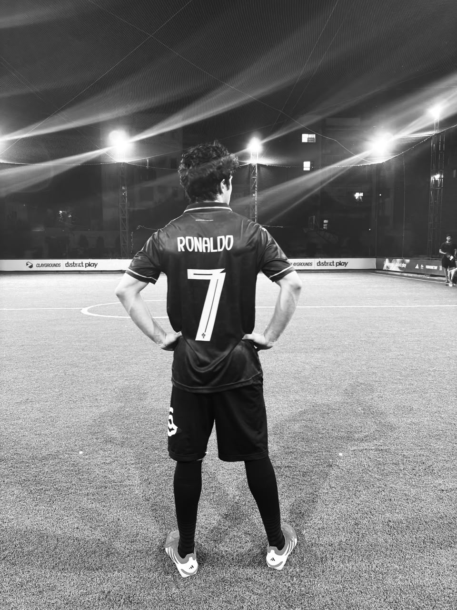

CHIRAG
I spend an unhealthy amount of time playing, watching, and following football, pushing myself in the gym, and replaying the same Eminem tracks for the hundredth time. The rest is usually spent tinkering with technology, building projects, and satisfying an endless curiosity for how things work behind the surface.
Clicks
Photography
